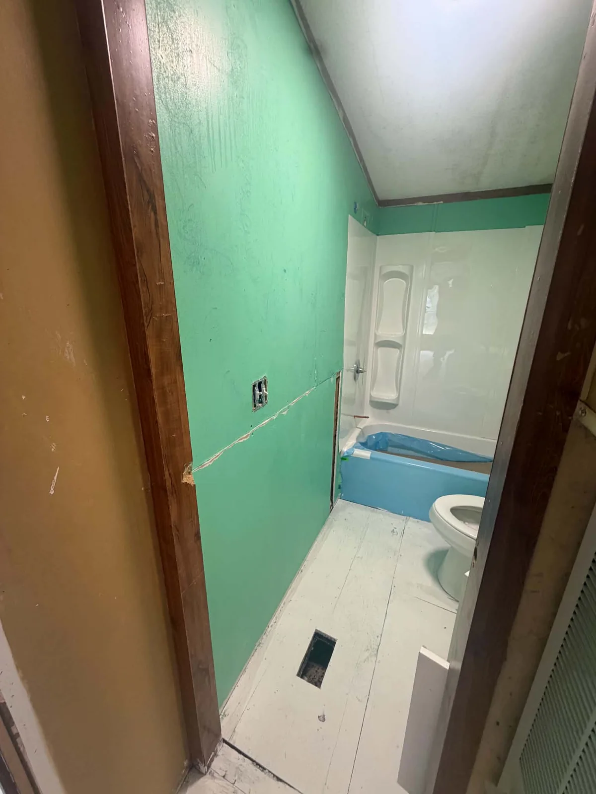
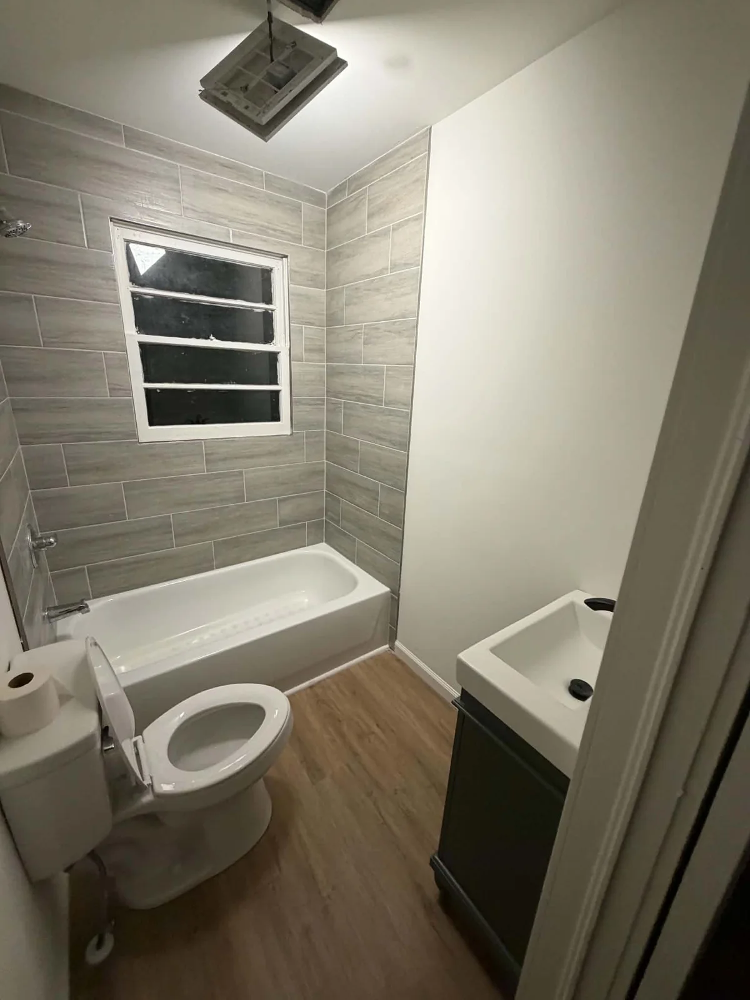
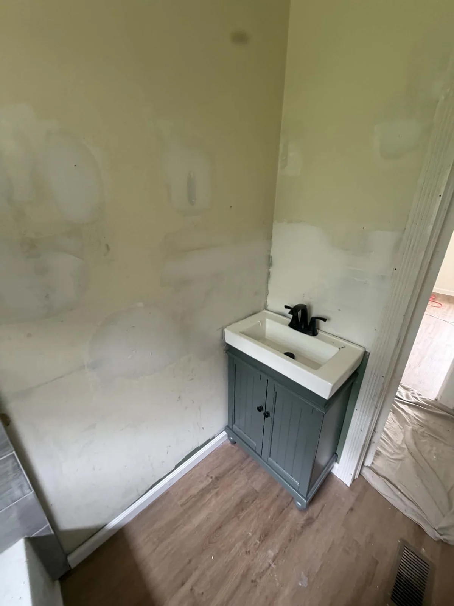
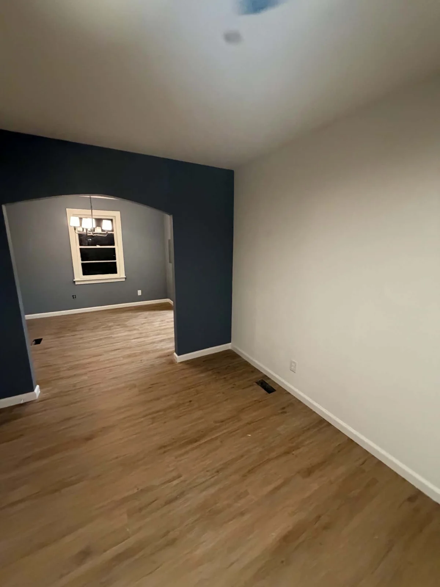

Paint, prep and
the finish in between.
Interior, exterior, cabinets and commercial. One crew from the first patch to the last touch-up.


Clean cut lines, even coverage and a room you can sleep in the same night.
We move and cover the furniture, fill and sand the imperfections, and cut a line you can see from across the room. Low-VOC paint is standard, and we leave the space vacuumed and back in order.
Walls, ceilings, trim, doors, stairwells and built-ins. One room or the whole house, with a written schedule so you know which days are loud and which are done.
- Furniture moved and covered
- Fill, sand and spot-prime
- Low-VOC paint
- Daily clean-up
- Cut lines by hand, not by tape alone
- Final walkthrough with touch-ups
The prep is why the paint stays. We wash, scrape, caulk and prime before we spray.
Exterior paint fails at the edges: dirt, chalk, loose caulk and bare wood. We wash the surface, scrape and sand loose paint, replace failed caulk and spot-prime bare areas before any finish coat goes on.
Siding, soffits, fascia, trim, doors and shutters. We protect the landscaping and walk the house at the end, because a clean job includes the ground around it.
- Pressure wash and dry time
- Scrape, sand and spot-prime
- Caulk joints and gaps
- Trim, doors and shutters
- Landscaping protected
- Final walkaround

A sprayed finish is the difference between a refresh and a remodel.
Cabinet painting is a prep job disguised as a paint job. Doors and drawers come off, hardware comes off, and every surface is degreased, sanded and bonded before finish.
We spray in a controlled sequence, let coats cure, then reinstall doors, drawers and hardware. The result is a hard, even finish without brush marks or roller texture.
- Doors and drawers removed
- Degrease, sand and bond
- Sprayed finish, not rolled
- Hardware removed and reinstalled
- Cure time scheduled
- Touch-up kit left behind

After-hours crews, volume pricing and a finish that survives tenants.
We work with property managers, realtors and small businesses on turns, common areas and full repaints. Nights and weekends are normal for us, not an exception.
One point of contact, a written scope per unit, and a schedule that tells you which units are ready when. We carry the insurance and keep the site clean.
- After-hours scheduling
- Per-unit written scope
- Volume pricing
- Low-odour products
- Site protection and cleanup
- Single point of contact

The right colour, on a surface that is actually ready for it.
Bring us the sofa, the floor sample or the Pinterest board. We narrow the fan deck to three colours that work in your light, then test them on the wall before you commit.
Drywall patches, nail pops, hairline cracks and sanding are handled in the prep phase, because paint does not hide a bad surface — it highlights it.
- Three-colour shortlist
- On-wall test patches
- Drywall and crack repair
- Sanding and dust control
- Primer matched to the surface
- Written prep list
Tell us about
the room.
Send the space, the timeline and a photo if you have one. We will come back with a written number, not a range.